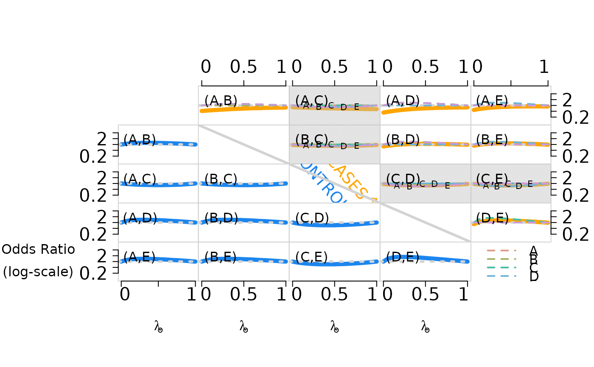
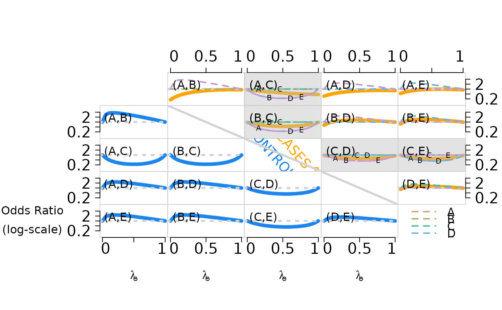
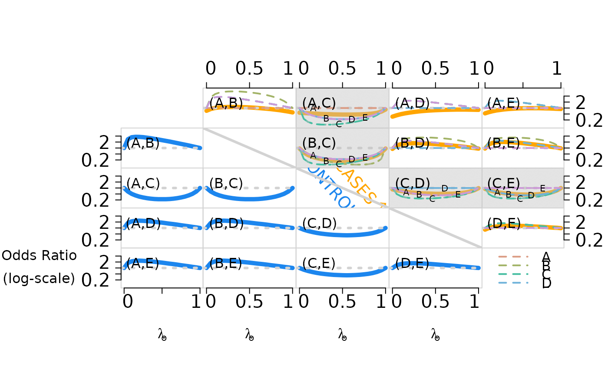

Calculate marginal log odds ratios
Source:R/compute_functionals_of_model.R
compute_logOR_single_cause.RdThis only works for single-agent causes
Arguments
- set_parameter
True model parameters in an npLCM specification:
cause_lista vector of disease class names among cases (since the causes could be multi-agent (e.g., multiple pathogens may cause an individual case's pneumonia), so its length could be longer than the total number of unique causative agents)
etiologya vector of proportions that sum to 100 percent
pathogen_BrSa vector of putative causative agents' names measured in bronze-standard (BrS) data. This function simulates only one slice defined by
specimen``test``pathogenpathogen_SSa vector of pathogen names measured in silver-standard (SS) data.
meas_nma list of
specimen``testnames e.g.,list(MBS = c("NPPCR"),MSS="BCX")for nasopharyngeal (NP) specimen tested by polymerase chain reaction (PCR) -NPPCRand blood (B) tested by culture (Cx) -BCXLambdacontrols' subclass weights \(\nu_1, \nu_2, \ldots, \nu_K\) a vector of
Kprobabilities that sum to 1.Etaa matrix of dimension
length(cause_list)byK; each row represents a disease class (among cases); the values in that row are subclass weights \(\eta_1, \eta_2, \ldots, \eta_K\) for that disease class, so needs to sum to one. In Wu et al. 2016 (JRSS-C), the subclass weights are the same across disease classes across rows. But when simulating data, one can specify rows with distinct subclass weights - it is a matter whether we can recover these parameters (possible when some cases' true disease classes are observed)PsiBS/PsiSSFalse positive rates for Bronze-Standard data and for Silver-Standard data. For example, the rows of
PsiBScorrespond to the dimension of the particular slice of BrS measures, e.g.,10for 10 causative agents measured by NPPCR; the columns correspond toKsubclasses; generically, the dimension isJbyKPsiSSis supposed to be a vector of all zeros (perfect specificity in silver-standard measures).ThetaBS/ThetaSSTrue positive rates \(\Theta\) for Bronze-Standard data and for Silver-Standard data. Dimension is
JbyK(can containNAif the total number of causative agents measured by BrS or SS exceeds the measured causative agents in SS. For example, in PERCH study, nasopharyngeal polymerase chain reaction (NPPCR; bronze-standard) may target 30 distinct pathogens, but blood culture (BCX; silver-standard) may only target a subset of the 30, so we have to specifyNAinThetaSSfor those pathogens not targeted by BCX).Nuthe number of control subjects
Ndthe number of case subjects
Value
a matrix of log odds ratio. See the example for a figure showing pairwise odds ratios for cases (upper right, solid lines) and controls (lower left, broken lines) as the first subclass weight increases from 0 to 1. Pairwise independence is represented by the dotted horizontal lines for reference.
Examples
K.true <- 2 # no. of latent subclasses in actual simulation.
# If eta = c(1,0), effectively, it is K.true=1
J <- 5 # no. of pathogens.
N <- 500 # no. of cases/controls.
col_seq_cause <- c("#DB9D85","#A2B367","#47BEA2",
"#70B3DA","#CD99D8")#colorspace::rainbow_hcl(5, start = 30, end = 300)
subclass_mix_seq <- seq(0,1,by=0.05)
res <- array(NA,c(J,J,length(subclass_mix_seq)))
res_cond <- array(NA,c(J,J,length(subclass_mix_seq),J))
it <- layout(matrix(1:J^2,nrow=J,ncol=J,byrow=TRUE),
heights = rep(3,J),
widths = rep(3,J))
oldpar <- par(oma=c(8,10,8,3));
pch_seq_cause <- LETTERS[1:J]
lty_seq_cause <- 1+(1:J)
pch_pos_seq <- c(0.01); gap = 0.15
adj_seq <- c(0.15,0.5,0.85) # for roman numerals:
cex1 <- 2
cex_label1 <- 1
cex2 <- 2
cex_label2 <- 2
cex_margin_marks <- 2
for (scn in c(1,2,3)){
for (iter in seq_along(subclass_mix_seq)){
curr_mix <- subclass_mix_seq[iter]
lambda <- c(curr_mix,1-curr_mix)
eta <- c(curr_mix,1-curr_mix)
# if it is c(1,0),then it is conditional independence model, and
# only the first column of parameters in PsiBS, ThetaBS matter!
seed_start <- 20150923
# set fixed simulation sequence:
set.seed(seed_start)
if (scn == 3){
ThetaBS_withNA <- cbind(c(0.95,0.9,0.1,0.5,0.5),
c(0.95,0.1,0.9,0.5,0.5))
PsiBS_withNA <- cbind(c(0.4,0.4,0.05,0.2,0.2),
c(0.05,0.05,0.4,0.05,0.05))
}
if (scn == 2){
ThetaBS_withNA <- cbind(c(0.95,0.5,0.5,0.5,0.5),
c(0.95,0.5,0.5,0.5,0.5))
PsiBS_withNA <- cbind(c(0.4,0.4,0.05,0.2,0.2),
c(0.05,0.05,0.4,0.05,0.05))
}
if (scn == 1){
ThetaBS_withNA <- cbind(c(0.95,0.5,0.5,0.5,0.5),
c(0.95,0.5,0.5,0.5,0.5))
PsiBS_withNA <- cbind(c(0.3,0.3,0.15,0.2,0.2),
c(0.15,0.15,0.3,0.05,0.05))
}
# the following paramter names are set using names in the 'baker' package:
set_parameter0 <- list(
cause_list = c(LETTERS[1:J]),
etiology = c(0.5,0.2,0.15,0.1,0.05), #same length as cause_list
#etiology = rep(0.2,J), #same length as cause_list
pathogen_BrS = LETTERS[1:J],
meas_nm = list(MBS = c("MBS1")),
Lambda = lambda, #ctrl mix
Eta = t(replicate(J,eta)), #case mix, row number equal to Jcause.
PsiBS = PsiBS_withNA,
ThetaBS = ThetaBS_withNA,
Nu = N, # control size.
Nd = N # case size.
)
res[,,iter] <- round(compute_logOR_single_cause(set_parameter0),2)
for (pick in 1:J){
set_parameter <- set_parameter0
set_parameter$ThetaBS <- set_parameter0$PsiBS
set_parameter$ThetaBS[pick,] <- set_parameter0$ThetaBS[pick,]
set_parameter$etiology <- rep(0,J); set_parameter$etiology[pick] <- 1
res_cond[,,iter,pick] <- round(compute_logOR_single_cause(set_parameter),2)
}
}
ind <- sapply(c(0,0.5,1),function(x) which(subclass_mix_seq==x))
logOR_lim <- c(-2.15,2.15)
col_seq <- c("dodgerblue2","orange")
logOR_seq <- log(c(0.25,0.5,1,2,4))
pick_one <- 3
print(paste0("==Shading pairs of ",pch_seq_cause[pick_one]," and others.==="))
for (j in 1:J){
for (l in 1:J){
par(mar=c(0,0,0,0));
if (j==J){
par(mar=c(0,0,0,0))
}
if (l%%J==0){
par(mar=c(0,0,0,1))
}
if (l%%J==1){
par(mar=c(0,1,0,0))
}
if (!(j==l)){
plot(res[j,l,],type="l",xlab="",ylab="",
ylim=logOR_lim, lwd=5,
xaxt="n",
yaxt="n",
col=col_seq[1+(l>j)],
#lty=c(2,1)[1+(l>j)],
lty=1,
bty="n"
)
box(col="lightgray")
abline(h=0,col="lightgray",lwd=3,lty=3)
if (j<l){
matplot(res_cond[j,l,,],type="l",add=TRUE,pch=LETTERS[1:J],lwd=2,lty=2,
col=col_seq_cause)
}
lab_ord <- c(j,l); if (j>l){lab_ord <- rev(lab_ord)}
mtext(paste0("(",set_parameter$pathogen_BrS[lab_ord[1]],",",
set_parameter$pathogen_BrS[lab_ord[2]],")"),
side=3, adj=0.1,line=-2)
if (l%%J==1){
axis(2,at = logOR_seq,
labels = round(exp(logOR_seq),1),
las=2,cex.axis=cex1)
}
if (l%%J==0){
axis(4,at = logOR_seq,
labels = round(exp(logOR_seq),1),
las=2,cex.axis=cex1)
}
if (j==J){
axis(1,at=seq_along(subclass_mix_seq)[ind],
labels=rep("",length(ind)),cex.axis = cex1,las=1)
axis(1,at=seq_along(subclass_mix_seq)[ind]+c(1,rep(0,length(ind)-2),-1),
labels=subclass_mix_seq[ind],cex.axis = cex1,las=1,tick=FALSE)
}
if (j==1){
axis(3,at=seq_along(subclass_mix_seq)[ind],
labels=rep("",length(ind)),cex.axis = cex1,las=1)
axis(3,at=seq_along(subclass_mix_seq)[ind]+c(1,rep(0,length(ind)-2),-1),
labels=subclass_mix_seq[ind],cex.axis = cex1,las=1,tick=FALSE)
}
if (j==5 & l==1){
mtext(expression(atop("Odds Ratio","(log-scale)")), side = 2, line = 4,
cex=cex_label1, las=2)
}
if (j==5){
mtext(expression(lambda[o]),side=1,line=4,cex=cex_label1)
}
if ((j<l) && (l==pick_one | j==pick_one )){
# add shading cells for oen picked pathogen among cases:
color <- rgb(190, 190, 190, alpha=80, maxColorValue=255)
rect(par("usr")[1], par("usr")[3], par("usr")[2],
par("usr")[4], density = 100, col = color)
matplot(res_cond[j,l,,],type="l",add=TRUE,lwd=2,col=col_seq_cause,lty=lty_seq_cause)
for (ell in 1:J){
where_add_letter <- quantile(seq_along(subclass_mix_seq),pch_pos_seq+gap*ell)
points(where_add_letter, res_cond[j,l,where_add_letter,ell], pch=pch_seq_cause[ell])
}
mtext(paste0("(",set_parameter$pathogen_BrS[lab_ord[1]],",",
set_parameter$pathogen_BrS[lab_ord[2]],")"),
side=3, adj=0.1,line=-2)
}
}else{
plot(1, type="n", axes=FALSE, xlab="", ylab="", bty="n",
xlim=c(0,1),ylim=c(0,1))
if (j==3){
text(labels=expression(CASES%up%""),x=.7,
y=0.55,srt=-49,col=col_seq[2],cex=1.8,adj=0.5,font=4)
text(labels=expression(CONTROLS%down%""),x=.42,
y=0.38,srt=-49,col=col_seq[1],cex=1.8,adj=0.5,font=4)
}
if (j!=1 & j!=J){
dg <- par("usr")
segments(dg[1],dg[4],dg[2],dg[3], col='lightgray',lwd=3)
}
if (j==J){
legend("top",LETTERS[1:J],lty=2,col=col_seq_cause,cex = 1.5,lwd=2,
bty="n",horiz=FALSE)
}
}
}
}
}
#> [1] "==Shading pairs of C and others.==="

#> [1] "==Shading pairs of C and others.==="

#> [1] "==Shading pairs of C and others.==="

par(oldpar)